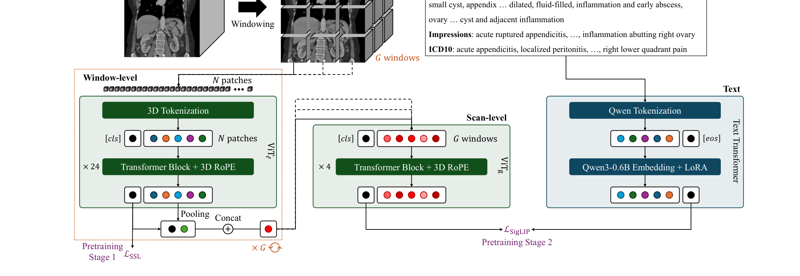
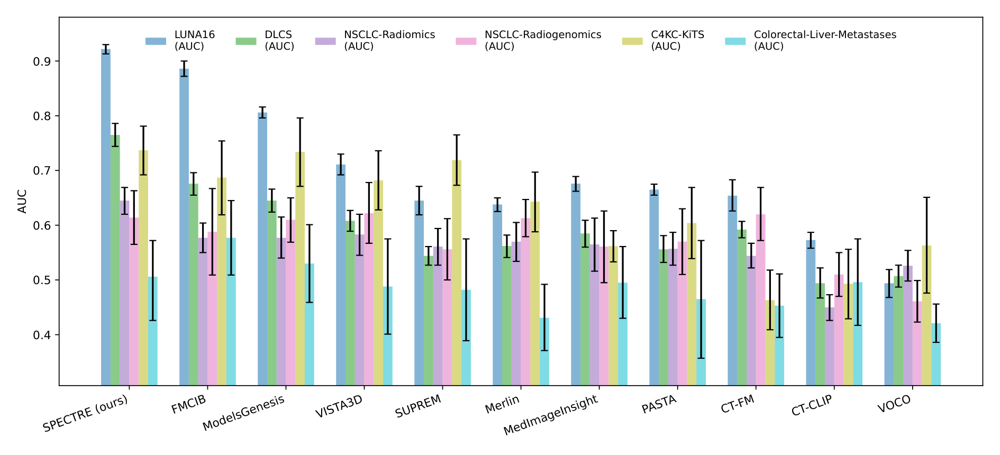
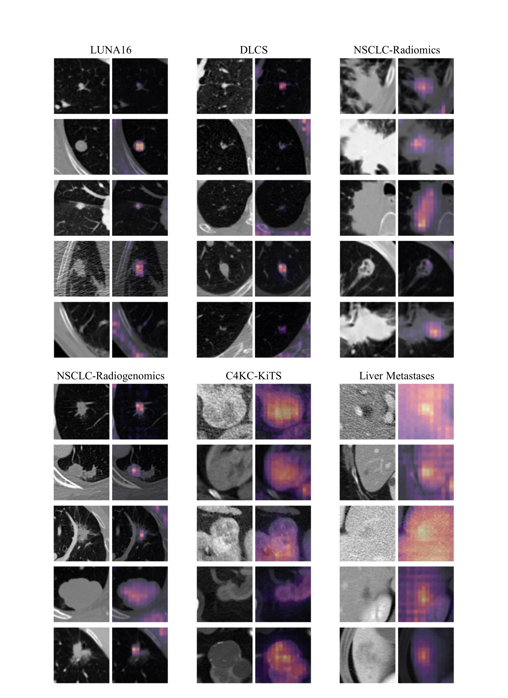
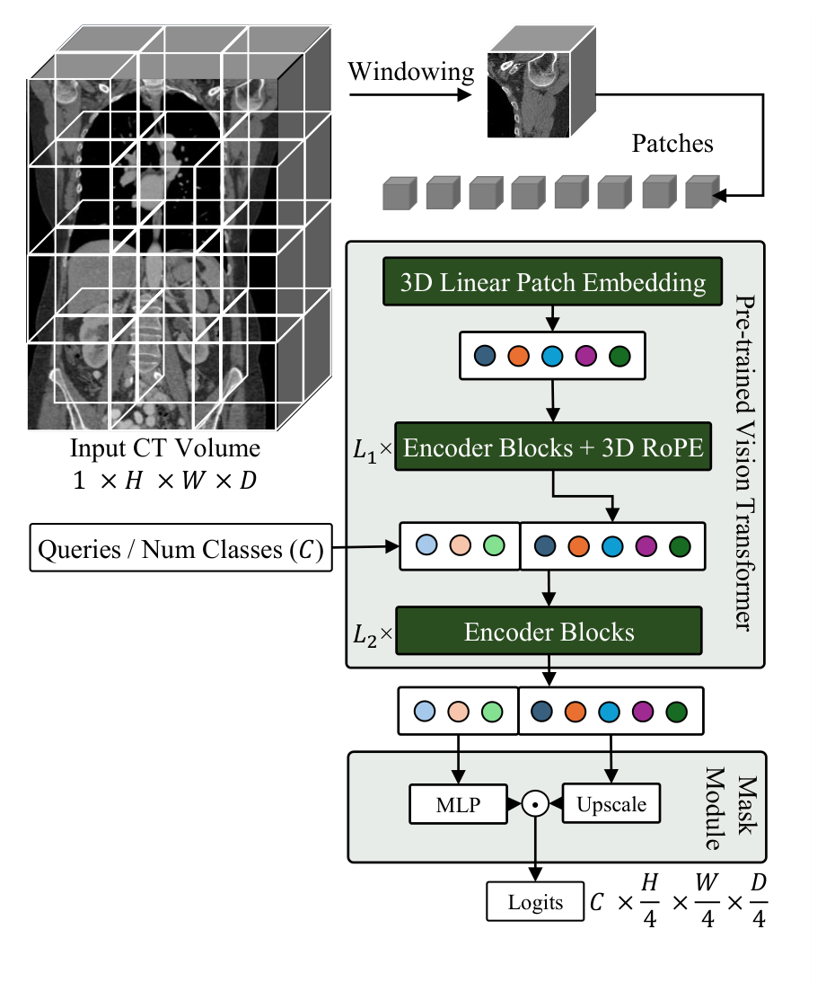
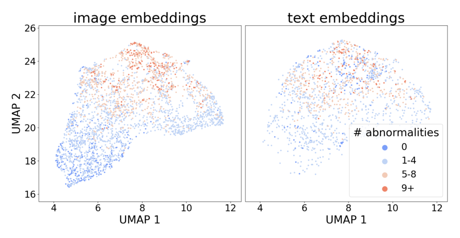
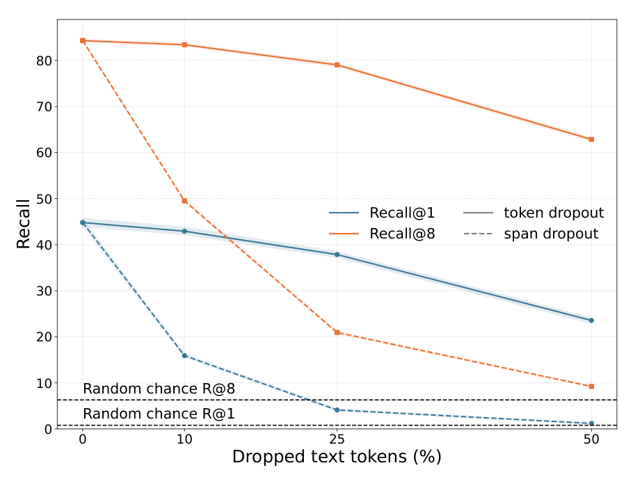

SPECTRE 深读：一整张 CT 的注意力算不动，凭什么“局部 24 层细看 + 全局 4 层粗览”既省算力又不丢上下文？
导读。把 ViT 端到端搬到 3D CT 上，第一道墙不是精度，是算力本身：朴素 3D patch 化让 token 数随分辨率近似立方膨胀，而自注意力又是 token 数的平方——一整张胸腹 CT 的全局注意力根本算不动。绕不开就只能砍：要么砍分辨率（丢细节），要么砍上下文（只在局部窗口里看，丢全局）。SPECTRE 的核心赌注是“两级都要”——局部 ViT 用 24 层在窗口内把高分辨率细节看透，全局 ViT 只用 4 层、在被压成“每窗口一个描述子”的极短序列上做全局注意力，于是 $\mathcal{O}(N^2)$ 的 3D 注意力被拆成“局部代价随窗口数线性 + 全局代价因序列极短而廉价”。立题问题因此很具体：当你被迫在一整张 CT 上“省注意力”，到底该在哪一级省、又怎么保证省掉的不是全局上下文？第二条暗线同样硬核——临床报告是“一张扫描对多句描述、且共病并存”的多对多噪声标签，CLIP 的 softmax 对比会被语义重叠的“假负样本”毒化，SPECTRE 改用 SigLIP 的 sigmoid 来接。
cclaess/SPECTRE）。
1. 核心问题：3D 注意力的“立方×平方”墙，到底该在哪一级省？
2D 里 SSL（自监督）与 VLA（视觉-语言对齐）已经成熟，但论文开篇就指出：这些成功不会自动迁移到体积 CT。ViT 在自然图像里靠“弱归纳偏置 + 大数据 + 强目标”取胜，可一旦进入 3D 医学体积，三件事同时变坏。
- 极端 token 膨胀。朴素地把 3D 体积切 patch，token 数随分辨率近似立方增长，而自注意力是 token 数的平方。论文直说：全局注意力、大 batch 这些“在规模上最有效的设计”，在 CT 上必须先做某种近似才用得起。
- 几何异质性。CT 有各向异性体素间距、可变 FOV、不同扫描仪的重建核/降噪/剂量。任何“假设各向同性或简单平移不变”的位置编码都会错误地表示扫描间几何——模型必须显式编码体素间距与切片采样。
- 临床监督弱、噪、且分层。自由文本报告、稀疏标签、研究级标注。更要命的是：2D 的 VLA 配方靠“巨量负样本 + 大 batch”成立，3D 在显存上根本喂不起；而放射报告常列多个共病，于是候选“负样本”经常和正样本共享临床语义——标准 CLIP 对比损失的信号被这种重叠稀释。
问：既然全局注意力算不动，那直接学 Swin/CNN 那套“只在局部窗口里做注意力”不就完了？为什么还要费劲搞两级？
引导：盯住“纯局部窗口”丢掉了什么——窗口之间没有信息交换。一张 CT 的诊断常依赖跨器官、跨区域的全局关系（如“肺部病灶 + 纵隔淋巴结”）。只在窗口内看，等于把整张扫描切成互不通气的小块。
答：论文要的是“既要高分辨率局部细节、又要全局上下文，还要算得起”三者兼得。纯局部（窗口注意力）省了算力却丢了全局；纯全局（整张扫描全注意力）保了上下文却算不动。SPECTRE 的结构性回答是把这两件事分到两级、各用各的注意力：局部级在窗口内做密集注意力拿细节，全局级先把每个窗口压成一个描述子、再在这条极短序列上做全注意力拿上下文。关键在“压”这一步——它让全局注意力的序列长度从“几万 patch”降到“几十个窗口”，平方代价也就不再是墙。这与稀疏/局部注意力“为节约而生”的思路同源 [archives/6853, 9431]。
Takeaway：真问题不是“用不用注意力”，而是“在哪一级省”。SPECTRE 把答案拆成两半：局部级省在“只看窗口内”，全局级省在“只看窗口的摘要”——两处省下的都不是全局上下文本身。
2. 贡献拆解：作者明确提出了什么？
作者明确提出的贡献（论文 §1 第 (1)(2)(3) 条）：
- 几何感知的 transformer 设计与 tokenization——显式编码各向异性与体素尺度信息（各向异性 patch + 3D RoPE）。
- 平衡 token 复杂度与上下文保持的注意力架构——即两级（局部 + 全局）注意力，让大规模 3D 注意力在计算上可行。
- 两阶段预训练流水线——先用 SSL 式目标 bootstrap 鲁棒的几何感知特征，再用 VLA 注入临床语义。
- 全开源 + 仅公开数据——模型、训练代码、预训练配方全部公开；并证明“不依赖私有数据也能学到高性能、可泛化的表示”。
读数提醒：这篇的“评测姿态”值得单独标注
SPECTRE 主战场是冻结表示的可迁移性——生物标志物分类用冻结嵌入 + kNN（不微调）、检索是零样本。这意味着它报告的数字衡量的是“表示本身好不好”，而非“针对某任务调到多好”。这是基础模型该有的评测，但也要据此理解结果：分割（表 1）是把冻结编码器接一个轻量解码头，不是端到端重训一个分割 SOTA。
读者能进一步推断的是：这篇真正推进的单一变量是“如何让 3D 全局注意力可计算而不牺牲上下文”。它没有发明新损失、没有新数据，而是把 DINOv3 + SigLIP 这套成熟 2D 配方，用一套几何感知的两级 ViT 适配到体积 CT，并诚实地把“偏胸部、依赖报告噪声”作为代价摆出来。
3. 数据：229,619 个公开 CT 序列，且“只用公开数据”本身是主张
SPECTRE 的一个显式立场是不碰私有数据。预训练语料来自 8 个公开 CT 数据集，经各自的排除准则后合计 229,619 个图像序列，覆盖胸、腹、盆，含造影/非造影、不同剂量。其中三个带配套放射报告/EHR 诊断码的数据集，可同时用于 SSL 和 VLA。
| 来源数据集 | 部位 | 序列数 | SSL | VLA |
|---|---|---|---|---|
| NLST | 胸 | 132,985 | ✓ | — |
| CT-RATE | 胸 | 47,149 | ✓ | ✓ |
| INSPECT | 胸 | 23,226 | ✓ | ✓ |
| Merlin | 腹 | 15,314 | ✓ | ✓ |
| AbdomenAtlas | 腹 | 5,195 | ✓ | — |
| AMOS | 腹 | 2,450 | ✓ | — |
| PANORAMA | 腹 | 2,238 | ✓ | — |
| AbdomenCT-1K | 腹 | 1,062 | ✓ | — |
| 合计 | — | 229,619 | — | — |
读这张表要抓两点。其一，数据极度偏胸部：仅 NLST 一家（132,985）就占了一多半，加上 CT-RATE、INSPECT，胸部序列约 20 万，腹部不到 3 万。第 9 节的“胸部任务普遍强于腹部”正是这条数据失衡的直接后果。其二，带报告的只有 4 家（CT-RATE / INSPECT / Merlin，以及 VLA 实际用到的子集），所以视觉-语言对齐能看到的“图-文配对”规模远小于纯图像的自监督规模——这解释了为什么 SSL 要先行、把几何先验吃饱，VLA 才在更小的配对集上补语义。
3.1 把“billing code”翻成人话：让 LLM 重写报告，但 EHR 码保真
VLA 的文本侧处理有两个值得记的设计（论文附录 A.3）：(1) 报告按 Findings / Impressions 分段，每段用 LLM（Gemini 2 Flash）“在不改变任何医学事实的前提下”重写，每段生成 3 个语义等价的改写，训练时随机采一个（LaCLIP 的单正样本策略），由放射科医生策划的 4 个示例（2 胸 2 腹）约束改写保真度；(2) 结构化 EHR 诊断码（如 J18.9）不交给 LLM——因为 LLM 处理裸码容易出错——而是直接替换成 WHO 2025 的简短描述、以逗号列表附在报告末尾，在 LLM 重写之后追加，以保住计费与流行病学的准确性。
问：又是文本增强，这跟 §1 说的“报告噪声/多对多”有什么关系？是工程润色还是机制必需？
答：它是机制必需的一半。临床报告天然“一张扫描对应多种写法、多个共病”——这正是后面 SigLIP（而非 softmax CLIP）要对付的多对多结构。LLM 把同一段 Findings 改写成 3 个等价版本，等于显式告诉模型“这些不同措辞指向同一张图”，给图-文对齐提供“写法不变性”的监督；而 EHR 码保真则确保“共病清单”不被改写时丢失或臆造。两者合起来，是把“多对多噪声”从损失端（SigLIP）和数据端（重写+保真）两头一起处理。
Takeaway：“重写报告”不是数据清洗边角料，而是为多对多对齐铺的监督；保真 EHR 码则是不让重写污染共病信息的红线。
4. Pipeline 与架构：局部 ViT$_\ell$ ×24、全局 ViT$_g$ ×4，在“窗口描述子”处交汇
图 2 是全文骨架。一张 CT 体积经 3D tokenization 切成窗口，局部 ViT$_\ell$（24 层、窗口内注意力 + 3D RoPE）逐窗口抽高分辨率特征；每个窗口被压成一个描述子后，全局 ViT$_g$（4 层、在 $G{+}1$ 个 token 上做全注意力）聚合全扫描语义。文本侧（仅 VLA 阶段）用 Qwen3-0.6B Embedding + LoRA 编码报告，在共享空间里用 SigLIP 对齐。
{kind=link}

为什么是“24 局部 + 4 全局”这种非对称深度？
这恰好呼应 §1 的“在哪一级省”。局部注意力的代价对窗口数 $G$ 线性（每窗口 token 数 $m$ 固定），所以把深度堆到 24 层仍算得起——细节由它负责。全局注意力序列长度只有 $G{+}1$（几十），即便平方也廉价，但它的任务只是“把窗口摘要拼成全局图景”，4 层足矣。深度分配跟着“代价随什么增长”走，而不是平均铺开。
5. 方法：把“立方×平方”拆成“线性 + 廉价”，再用几何感知顶住异质性
5.1 最小 3D tokenization：各向异性 patch 与 1.8962 的压缩因子
给定体积 $X\in\mathbb{R}^{H\times W\times D}$，切成非重叠 3D patch 并线性投影成 token：
关键在 patch 形状的选择：$16\times16\times8$ 体素——深度方向只取面内一半。理由是几何性的：CT 切片方向的体素间距通常约为轴向平面的两倍，所以 patch 深度取一半，让一个 patch 在三个物理方向上覆盖相近的真实尺寸。嵌入维 $d=1080$。于是压缩因子为每 patch 体素数比上嵌入维：
论文给了一个对照锚点：对 $H,W{=}128,D{=}64$ 的典型 crop（很多病灶分割任务的尺寸），上式得 512 个 token，正好等于一张 $256\times256$ 的 2D 图在 patch $16\times16$ 下的 token 数——把 3D 局部窗口的 token 预算压到 2D 的量级，这是局部级算得起的前提。
5.2 局部级与扫描级注意力：压成描述子，把序列长度从“万”降到“十”
局部 ViT$_\ell$ 做标准 transformer，但注意力限制在局部窗口内。把整张扫描的 token 网格切成 $G$ 个窗口（每个对应体积的一个 3D crop），每窗口 $m$ 个 token，前置一个可学习 [cls] $c_w$。窗口内做标准多头自注意力（MHSA）：
由于每窗口 token 数 $m$ 固定，整张扫描的局部注意力代价随窗口数 $G$ 线性增长（论文式 4 的要点）：窗口内注意力是对固定 $m$ 个 token 的固定开销，$G$ 个窗口就是 $G$ 份固定开销。这是第一处“省”。
第二处“省”在聚合。窗口处理完后，对 $m$ 个 patch token 取均值，再与该窗口的 [cls] 拼接，得到一个窗口描述子：
把 $G$ 个描述子堆成 $U\in\mathbb{R}^{G\times 2d}$（式 7），线性投影回 $d$ 维得 $\tilde U$，再前置一个扫描级 [cls] $c_g$，进全局编码器：
公式读法（式 5–6 是“省而不丢”的心脏）
为什么“均值 $\bar t_w$ ⊕ [cls] $c_w$”能既压缩 token、又保住全局上下文？因为这两项各管一头：$c_w$ 是窗口内自注意力反复读过所有 patch 后主动汇总的窗口级表示（保上下文），$\bar t_w$ 是 patch 级细节的无参均值（保细节统计）。把二者拼起来，一个窗口的“是什么 + 大致长什么样”就被压进一个向量。于是全局编码器面对的不再是几万个 patch，而是 $G$ 个“窗口摘要”——序列长度塌缩到几十，平方注意力的墙就消失了。压缩发生在“窗口→描述子”，而被压掉的是 patch 间的冗余、不是全局关系：全局关系恰恰由全局 ViT$_g$ 在这些描述子之间重新建立。
5.3 3D RoPE：用“旋转”而非“查表”顶住分辨率/FOV 漂移
位置编码必须显式承载几何，否则 §1 的各向异性会让模型“认错坐标”。SPECTRE 用 3D 旋转位置编码（RoPE）：通过旋转 query/key 注入连续轴向坐标，而非加一个学习好的位置向量——这避免存储大块插值位置场，又能跨分辨率保持相对位置信息。设每个头维度 $d_k$，令
再叠一层 RoPE-box jittering（沿用 DINOv3）：对归一化坐标 $r_i\in[-1,1]^3$ 施加全局缩放 $s\sim\mathcal{U}(0.5,2.0)$ 得 $\tilde r_i$，轴向角为 $\theta^{(a)}_i=2\pi\,\tilde r_i^{(a)}/p$（$a\in\{h,w,d\}$），最后把旋转作用到 Q/K（式 11–13）。局部、全局两级 ViT 都用 RoPE。
问：为什么“旋转坐标 + 随机缩放”就能对体素间距、FOV 的变化鲁棒？给我两条独立的理由。
路径 A（函数式相对位置，自上而下）：RoPE 是函数式相对位置编码——位置信息以连续坐标的旋转角形式注入，注意力只依赖 query/key 的相对角度差。比起“为每个绝对位置查一个学习向量”，函数式编码不绑定到训练时见过的具体网格，因此换一个体素间距/FOV（等价于坐标被整体拉伸或采样变了）时，相对结构仍由同一套旋转规则给出，外推/鲁棒性更好。这正是苏剑林在“长度外推性与位置鲁棒性”里反复论证的：从位置编码的鲁棒性角度看，对位置施加扰动/缩放能让模型不过拟合到具体坐标 [archives/9444]，而函数式相对编码本身就比训练式更稳 [archives/9431]。
路径 B（数据增强 = 显式不变性，自下而上）：box-jittering 把 $s\sim\mathcal{U}(0.5,2.0)$ 的全局缩放当成训练时的随机扰动，等于在坐标尺度这一维上做数据增强。模型被反复要求“同一解剖在 0.5× 到 2× 不同坐标尺度下都给一致表示”，于是学到的是对尺度不变的特征——这正对应 CT 真实世界里体素间距能差出两三倍的异质性。两条路径殊途同归：一条说“函数式旋转天生对坐标变换稳健”，一条说“再用随机缩放把这种稳健显式训进去”。
Takeaway：RoPE 让位置“可计算、可外推”，box-jittering 把“尺度不变性”当增强训进去——二者叠加，才让一个模型吃得下不同间距/FOV 的 CT，而不必为每种几何重训。
5.4 两阶段预训练：先 DINOv3 喂几何先验，再 SigLIP 注临床语义
Stage 1（SSL，仅视觉）：用改造版 DINOv3。学生-教师都是 ViT$_\ell$（[cls] 维 $d=1080$，接 3 层投影头），学生是带掩码的 ViT，教师是学生的 EMA。多裁剪：每个体积采 2 个全局视图 + 8 个局部视图（全局按轴 $r_g\sim\mathcal{U}(0.5,1.0)$、局部 $r_\ell\sim\mathcal{U}(0.1875,0.5)$），叠翻转/锐化/平滑/gamma/噪声/强度重缩等增强。损失为 DINO + iBOT + KoLeo，权重 1 : 1 : 0.1，并刻意去掉 DINOv3 的 Gram loss（它主要在“把模型扩到十亿参数级、优化稠密特征”时有用，而 CT 的操作谱较窄，用不上）：
问：iBOT 的掩码比例 $\rho\sim\mathcal U(0.2,0.7)$ 明显高于 DINOv3/原 iBOT 的 $\mathcal U(0.1,0.5)$——这不是随手调的超参，背后是什么道理？
答：论文给的理由很 kexue——3D 里掩码重建“更容易”，所以要掩得更狠才有难度。掩码自蒸馏的学习信号来自“从可见 token 推断被掩 token”的难度；2D 里一个 patch 的空间邻居有限，3D 里每个 token 的邻居数量大得多（多了一个维度的近邻），可见上下文更冗余、重建更容易。若沿用 2D 的掩码比例，任务对 3D 来说太简单、梯度信号弱。把 $\rho$ 上限从 0.5 提到 0.7，相当于把任务难度拉回到“需要真正理解结构才能补全”的水平。这是“先讲为什么需要、再讲是什么”的典型：超参跟着“3D 邻居更多→任务更易”这条因果走。
Takeaway：掩码比例不是常数，是任务难度的旋钮；维度从 2D 升到 3D，冗余变多，旋钮就得往“更难”拧。
KoLeo（式 17）做近邻正则——对 L2 归一化嵌入，鼓励它们在表示空间里均匀铺开，防止坍缩。三项合起来：DINO 管全局一致、iBOT 管局部结构、KoLeo 防坍缩。
Stage 2（VLA，视觉-语言对齐）：SSL 完成后，把整模型（ViT$_\ell$ + ViT$_g$）冻结/继续训练来对齐报告。每张扫描切成 $G=36$ 个 $128\times128\times64$ 的窗口，编码成 $d=1080$ 的特征；文本用 Qwen3-0.6B Embedding + LoRA（$r{=}16,\alpha{=}64$），图文都投到共享 512 维空间、L2 归一化。对齐损失用 SigLIP（sigmoid），而非 CLIP 的 softmax InfoNCE：
问：为什么非得把 CLIP 的 softmax 换成 SigLIP 的 sigmoid？给两条独立理由，别只说“sigmoid 更好”。
路径 A（损失结构 vs 标签结构）：softmax InfoNCE 的隐含假设是“一个 query 只有一个正样本，其余全是负样本”——它在一个 batch 内做归一化竞争。但临床数据违反这个假设：一张扫描可能对应多句不同粒度的描述，且报告里共病并存，所以 batch 里别的样本经常和当前样本共享语义（假负样本）。softmax 会强行把这些假负样本往下压，注入错误梯度。SigLIP 把每个图-文对当成独立的二分类（sigmoid + BCE），正样本拉高、负样本压低，各对之间不做归一化竞争——于是“某个负样本其实和正样本语义重叠”时，它的惩罚是局部的、可被其他信号平衡，不会像 softmax 那样污染整个分布。这正对应 §1 说的“候选负样本常共享临床语义”。
路径 B（对 batch size 的敏感性）：softmax 对比的有效负样本数 ≈ batch size，3D 体积显存吃紧、batch 上不去（VLA batch 仅 144），softmax 的对比信号就弱。论文引文献指出 sigmoid 损失对小 batch 远没 softmax 那么敏感——因为它不靠“一个大分母里的众多负样本”来定标，每对自带 0/1 目标。再配合“文本嵌入跨设备 shuffle、图像嵌入留本地”的技巧，用上大量负样本却不付高通信代价。两条路径独立指向同一结论：临床的多对多噪声 + 3D 的小 batch，都让 sigmoid 比 softmax 更合身。
Takeaway：换 SigLIP 不是赶时髦——softmax 的“唯一正样本 + 大 batch”两条前提，恰好都被临床 CT 的数据与显存现实打破，而 sigmoid 把两条前提都松绑了。
6. 训练配置：SSL batch 1536、150 epoch，VLA batch 144、100 epoch
论文附录 Tab. 5 给了两阶段的超参，差异本身就透露了两阶段的不同性格。
| 超参 | SSL（Stage 1） | VLA（Stage 2） |
|---|---|---|
| Epochs | 150 | 100 |
| Steps | 83,100 | 59,000 |
| Batch size | 1,536 | 144 |
| LR 起 / 止 | $4\times10^{-3}$ / $1\times10^{-6}$ | $1\times10^{-4}$ / $1\times10^{-6}$ |
| LR schedule | Cosine annealing | Cosine annealing |
| LR warmup | 10 epoch | 10 epoch |
| LLRD | 0.9 | 0.9 |
| WD 起 / 止 | 0.04 / 0.4（inverse cosine） | 0.01 / 0.01（常数） |
| Optimizer | AdamW $(\beta_1{=}0.9,\beta_2{=}0.999)$ | AdamW $(\beta_1{=}0.9,\beta_2{=}0.95)$ |
数据预处理（附录 A.2/A.3）：所有序列先重定向到 RAS 坐标系，HU 截断到 $[-1000,+1000]$、归一化到单位区间；SSL 重采样到 $0.5\times0.5\times1.0$ mm、中心裁剪到最大 $512\times512\times384$，训练时随机裁 $256\times256\times128$，且同一扫描采 4 个随机 crop 当作 4 个独立 batch 元素提高 I/O 效率；VLA 重采样到 $0.75\times0.75\times1.5$ mm。
关于算力（粗估，不等同账单）
论文称在“工业级硬件”上训练，正文未给总 GPU 卡数与墙钟时间，只给了 batch（SSL 1536）、steps（83,100）与 epoch（150）。SSL batch 高达 1536 已经隐含了相当规模的分布式训练——这也是 §1 所说“大 batch 这种有效设计在 CT 上需要近似才用得起”的反面：作者用两级注意力把单样本代价压下来，才腾出显存把 batch 堆到 1536。具体卡时论文未披露，此处不做估算，以免给出“按论文披露数字粗略估算”都无从依据的数字。
7. 实验：冻结表示打三场——生物标志物、分割、跨模态检索
判断：三组证据测的是同一个东西——“冻结的通用 3D 表示到底有多可迁移”。生物标志物（kNN 不微调）测判别力；分割（仅编码器接轻解码头）测稠密迁移；检索（零样本）测跨模态对齐。逐一看。
7.1 肿瘤生物标志物：冻结 kNN，6 个基准里 4 个第一
采用 Pai 等人的标准化协议，对所有对比模型一视同仁：抽冻结编码器嵌入、训一个 kNN 分类器、不微调，以隔离“表示质量”而非“任务调优”。6 个数据集横跨诊断与预后：LUNA16、DLCS（恶性预测）；NSCLC-Radiomics、NSCLC-Radiogenomics、C4KC-KiTS、Colorectal-Liver-Metastases（两年生存预测）。结果即图 1 雷达图——SPECTRE 在 4/6 取得最高 AUC。
{kind=link}

{kind=link}

7.2 语义分割：SEoMT——仅用编码器，与 nnU-Net 同档
为测稠密迁移，作者把 EoMT（Encoder-only Mask Transformer）扩到 3D，称 SEoMT：冻结/预训练的 SPECTRE 编码器出体素 token，配一组可学习 query token（每语义类一个），免去实例级匹配（无匈牙利、无动态 query 分配），用标准体素级 CE/Dice 监督。它在 1/4 分辨率上预测掩码再三线性上采样，并作为 drop-in 替换进 nnU-Net，以保证“增益来自表示而非解码器工程”。
{kind=link}

| 方法 | 类型 | KiTS23 | LiTS | WORD |
|---|---|---|---|---|
| nnU-Net | 卷积 | 85.99 | 79.29 | 83.11 |
| nnU-Net ResEnc L | 卷积 | 88.06 | 81.20 | 85.79 |
| CoTr | 卷积 | 84.63 | 78.44 | 83.11 |
| nnFormer | transformer | 75.72 | 77.02 | 82.53 |
| SwinUNETRv2 | transformer | 75.07 | 73.27 | 78.99 |
| UNETR | transformer | 76.33 | 70.91 | 70.87 |
| WaveFormer | transformer | 80.61 | — | — |
| Primus-M | transformer | 86.13 | 79.52 | 83.19 |
| Primus-L | transformer | 86.04 | 79.90 | 82.99 |
| SPECTRE（本文） | transformer | 86.64 | 80.14 | 83.31 |
读这张表要分两层。在 transformer 阵营内，SPECTRE 三列全面压过 Primus-L/M、nnFormer、SwinUNETRv2、UNETR、WaveFormer——这是“纯 transformer + 好的预训练表示”能打的直接证据。跨阵营看：SPECTRE 在 KiTS23（86.64）甚至略超普通 nnU-Net（85.99），三列都与卷积系同档，但仍低于最强的 nnU-Net ResEnc L（88.06/81.20/85.79）。论文的诚实结论正是“不靠重解码器设计，仅编码器就能与 nnU-Net 竞争”，而非“分割 SOTA”。
7.3 零样本文本→图像检索：CT-RATE 碾压，Merlin 上互有胜负
| 方法 | R@5 | R@10 | R@50 | R@100 |
|---|---|---|---|---|
| CT-CLIP | 2.9 | 5.0 | 18.0 | 28.8 |
| SPECTRE（本文） | 17.5 | 25.5 | 48.9 | 59.9 |
| 随机 | 0.3 | 0.6 | 3.2 | 6.4 |
CT-RATE 上 SPECTRE 把 Recall@5 从 CT-CLIP 的 2.9 提到 17.5（约 6 倍），Recall@100 近 60——全扫描级的图文对齐确实建立起来了。但 Merlin 上的对比更耐读：
| 报告段 | 方法 | Recall@1（N=32/64/128） | Recall@8（N=32/64/128） | ||||
|---|---|---|---|---|---|---|---|
| Findings | OpenCLIP | 3.3 | 1.7 | 0.9 | 25.0 | 12.5 | 6.1 |
| BioMedCLIP | 4.4 | 2.1 | 1.2 | 30.6 | 15.6 | 7.9 | |
| Merlin（域内） | 77.6 | 68.7 | 59.4 | 98.8 | 96.5 | 92.0 | |
| SPECTRE | 55.5 | 43.8 | 33.0 | 93.5 | 86.3 | 76.1 | |
| Impressions | OpenCLIP | 3.2 | 1.7 | 0.8 | 25.2 | 12.6 | 6.4 |
| BioMedCLIP | 4.6 | 2.4 | 1.2 | 32.2 | 16.9 | 8.1 | |
| Merlin（域内） | 38.4 | 27.7 | 19.4 | 85.4 | 70.6 | 56.4 | |
| SPECTRE | 43.2 | 32.9 | 24.0 | 83.7 | 72.8 | 61.5 | |
| FR | SPECTRE | 66.4 | 55.7 | 44.8 | 96.4 | 91.6 | 84.3 |
| — | 随机 | 3.1 | 1.6 | 0.8 | 25.0 | 12.5 | 6.3 |
问：Merlin 在 Findings 上把 SPECTRE 按在地上摩擦（59.4 vs 33.0 @N=128），怎么还能说 SPECTRE 的对齐好？
答：关键在“域内 vs 零样本”。Merlin 模型是在 Merlin 自家数据上训练的，对它而言这是同分布检索；SPECTRE 是零样本（没在 Merlin 上专门训）。所以 Findings 上 Merlin 占优是“主场优势”。真正能说明问题的是另外两处：(1) Impressions 段上 SPECTRE（43.2）反超域内的 Merlin（38.4）——Impressions 是更“解读性”、结构更松散的文本，论文归因于 SigLIP 阶段的LLM 重写/文本增强让模型对“措辞与结构的多样性”更稳；(2) 整篇报告（FR）下 SPECTRE 进一步涨到 66.4，说明它能跨段整合，对报告结构不敏感。一个零样本模型在两个段上接近、在一个段上反超一个域内专训模型，这才是“通用对齐立得住”的证据。
Takeaway：别被 Findings 那一栏的差距骗了——把“域内 vs 零样本”摆正后，SPECTRE 在 Impressions/整篇上的表现恰恰印证了文本增强对“结构多变的临床语言”的鲁棒。
{kind=link}

8. 消融：对“文本被打散”的鲁棒性——随机丢字稳，整段丢就崩
附录还提供了若干消融（报告噪声、报告长度、体素间距、其它 SigLIP 变体、UMAP）。这里挑最能说明“模型到底依赖什么文本信号”的一组：检索性能随文本 token 被丢弃的退化曲线。
{kind=link}

问：同样丢掉 50% 的 token，为什么“随机散着丢”几乎不影响、“整段连着丢”就崩？这告诉我们模型学到了什么？
答：这条对照精确地切出了模型依赖的信息结构。随机 dropout 把缺失均匀散布，报告里冗余的、分布式的语义线索（同一所见在不同句子里反复出现、被 §3.1 的多版改写进一步强化）足以让模型补回大意——所以缓降。连续 span dropout 则整块抹掉一个语义单元（比如把“right lower lobe nodule”整句删掉），这块信息没有别处冗余可借，模型就真的不知道这张图该匹配什么——所以骤崩。
这背后是一条可证伪的判断：SPECTRE 的图文对齐建立在“分布式、冗余的临床线索”上，而非死记某几个关键 token。这正是 §3.1 LLM 多版改写想要的效果（让同一语义有多个等价写法→冗余→抗随机噪声），也解释了 §7.3 为什么它对 Impressions 这种“措辞多变”的段更稳。但它的软肋也被这张图标出来了：一旦某个语义单元被整体丢失（而非打散），就没有冗余兜底。
Takeaway：“随机丢稳、整段丢崩”不是 bug，是“依赖分布式冗余线索”这一学习结果的指纹——文本增强买到的是抗散点噪声，买不到抗整段缺失。
9. 局限与复现门槛：什么时候 SPECTRE 会偏、会漏？
| 边界 | 论文/方法信息 | 读者应如何理解 |
|---|---|---|
| 语料偏胸部 | NLST 一家就 132,985 序列；腹部合计 <3 万 | 胸部任务（肺）系统性强于腹部；这是数据失衡而非方法偏好，扩腹部数据可缓解 |
| 依赖临床报告 | 报告完整度/术语跨机构差异大，含固有噪声与偏倚 | 文本侧质量直接决定 VLA 上限；图 7 文本嵌入梯度弱、图 8 整段丢即崩，都是这条的表现 |
| 仅编码器分割会“糊” | SEoMT 在 1/4 分辨率预测再上采样，输出平滑 | 大器官稳、小/弱对比病灶可能被平滑掉；需要细粒度时仍要重解码器 |
| 算力门槛高 | “工业级硬件”，SSL batch 1536、150 epoch | 正文未给卡时；非大组难复现 SSL 阶段 |
| Merlin Findings 仍逊于域内 | 59.4(Merlin) vs 33.0(SPECTRE) @N=128 | 零样本对“结构化所见”段不及域内专训；通用性的代价 |
| 生物标志物无数值表 | 正文仅给雷达/柱状图，未列 AUC 表 | “4/6 第一”可据文字断言，但精确数值需以图读数/作者公开为准 |
问：§7.2 说 SEoMT 仅编码器就能和 nnU-Net 同档，§9 又说它会糊掉小病灶——这两件事矛盾吗？
答：不矛盾，是同一架构选择的一体两面。SEoMT 去掉重解码器、在 1/4 分辨率出掩码再三线性上采样，换来的是“优雅、计算高效、增益可归因于编码器表示”——所以在大器官、形状先验稳的目标（肾、肝、腹部器官）上能和 nnU-Net 同档。但同一个“低分辨率预测 + 平滑上采样”的设计，碰到小、低对比的病灶时，细节在下采样里就丢了、上采样补不回来，于是“平滑”变成“漏检”。论文自己说得很直白：平滑预测“在需要时会漏掉高分辨率细节，是待改进处”。所以这不是 bug，是“用分辨率换可归因性/效率”的已知代价——要细粒度分割，仍得把重解码器加回来。
Takeaway：SEoMT 的“同档”和“糊掉小病灶”是同一枚硬币：它证明的是编码器表示好，不是分割管线完整；这两者别混为一谈。
这篇最容易被过度宣传成什么
容易被说成“一个模型通吃所有 3D CT 任务、还全开源”。更严谨的说法是：SPECTRE 用一套几何感知的两级 ViT（局部细看 + 全局粗览）+ DINOv3/SigLIP 两阶段预训练，仅靠公开 CT 数据就训出一个冻结即可用的体积 CT 表示——在 6 个生物标志物基准上冻结-kNN 拿下 4/6、仅编码器分割与 nnU-Net 同档、零样本检索在 CT-RATE 上 6 倍于 CT-CLIP。但它偏胸部、依赖报告噪声、仅编码器分割会糊小病灶，且需工业级算力。它推进的核心变量是“如何让 3D 全局注意力可计算而不丢上下文”，不是宣告“通用 CT 模型已成”。
结语：几点学术判断
一句话总结：SPECTRE 把“一整张 CT 的注意力算不动”这个算力墙，拆成“局部 ViT$_\ell$（24 层窗口内注意力，代价随窗口数线性）+ 全局 ViT$_g$（4 层、在‘每窗口压成一个描述子’的极短序列上做全注意力，因 $G\ll m$ 廉价）”，再用各向异性 patch、3D RoPE、box-jittering 顶住几何异质性，最后用 DINOv3 喂几何先验、SigLIP（而非 softmax CLIP）接住临床报告的多对多噪声——于是一个冻结的、仅靠公开数据训成的表示，能同时撑住生物标志物分类、分割与跨模态检索。
- “在哪一级省注意力”是真正的设计变量：局部省在“只看窗口内”、全局省在“只看窗口摘要”，被压掉的都是 patch 间冗余而非全局关系——式 5–6 的“均值 ⊕ [cls]”是“省而不丢”的支点。
- 损失/超参要跟着 3D 的物理现实走：iBOT 掩码比例从 2D 的 0.5 提到 0.7（3D 邻居更多→任务更易→掩更狠）；换 SigLIP（多对多噪声 + 小 batch 两条都打破 softmax 的前提）；patch 深度取面内一半（切片间距约 2×）。每个数字背后都有“为什么”。
- 泛化与软肋同源：文本增强让对齐依赖“分布式冗余线索”，于是抗随机丢字（图 8 实线）、却抗不住整段丢失（虚线骤崩）；仅编码器分割让增益可归因，却也糊掉小病灶。优点和代价是同一选择的两面。
留给后续的两个反驳/验证路径：(a) “两级注意力 vs 朴素全局注意力”的等算力对照——论文论证了可计算性，但未在同等算力预算下直接比“两级”相对“全局近似（如 FlashAttention/线性注意力）”的精度-代价曲线；(b) 把腹部数据补到与胸部同量级，验证“胸强腹弱”是否纯由数据失衡导致——若补齐后差距消失，则坐实这是数据问题而非架构问题。
资料来源与图像说明
- Cris Claessens, Christiaan Viviers, Giacomo D’Amicantonio, Egor Bondarev, Fons van der Sommen. Scaling Self-Supervised and Cross-Modal Pretraining for Volumetric CT Transformers (SPECTRE). CVPR 2026（CVF pp. 13636–13647）/ arXiv:2511.17209v2（Eindhoven University of Technology · ARIA Lab / AIMS Lab）。代码：
github.com/cclaess/SPECTRE（HTTP 200）。 - 本文公式（式 1–20 选录）、表格（表 1–5）与全部实验数字以 arXiv PDF 为准；两级注意力（式 4–9）、3D RoPE（式 10–13）、DINO/iBOT/KoLeo（式 15–17）、SigLIP（式 19–20）写法对照原文 §3–4。生物标志物部分正文未提供数值表，图 3 柱高为图中读数（已在图注标注为量级参考），“4/6 第一”以论文文字为准。
- kexue:su 方法与归因：第 1、5 节“在哪一级省注意力”“RoPE+box-jittering 为何鲁棒”“SigLIP 为何胜过 softmax”的多路径论证，按
kexue:su方法（动机先行、假设显式、≥2 路径交叉验证）重新推导。其中两条一般原理有语料支撑并据此引用：窗口/稀疏局部注意力“为节约而生”、以削减 $\mathcal{O}(N^2)$ 代价——引苏剑林《为节约而生：从标准 Attention 到稀疏 Attention》[archives/6853] 与《Transformer 升级之路：7、长度外推性与局部注意力》[archives/9431]；函数式相对位置编码（RoPE）及“对位置施加扰动以提升鲁棒性”——引《Transformer 升级之路：8、长度外推性与位置鲁棒性》[archives/9444]。检索确返回此三张卡片（BM25 命中，含标题/标签/URL），故按一般原理引用并应用于本文情形；其余因果链（两级聚合、掩码比例随维度、SigLIP 对多对多噪声）为本文推导，未作 [archives] 归因。 - 图像说明：图 1、3、4、5、7、8 为本地 PNG，由
extract_figures.py（PyMuPDF，caption 锚定）从 arXiv PDF 裁切，路径assets/figures/spectre/。图 2（架构总览）含矢量文本，已直接采用提取的位图并在图注中转写其“×24 局部 / ×4 全局 / 两阶段”关键结构；提取器跳过的 fig 6（无图形）未使用。